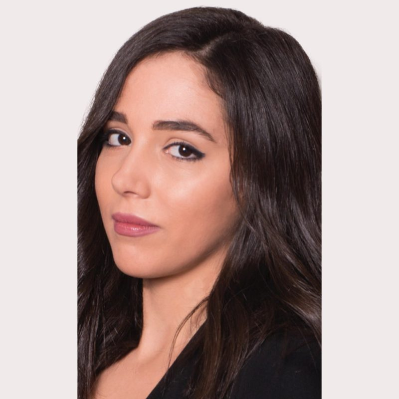
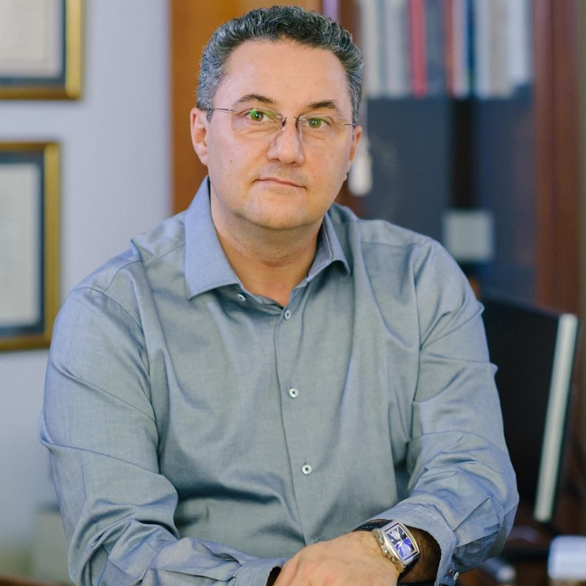
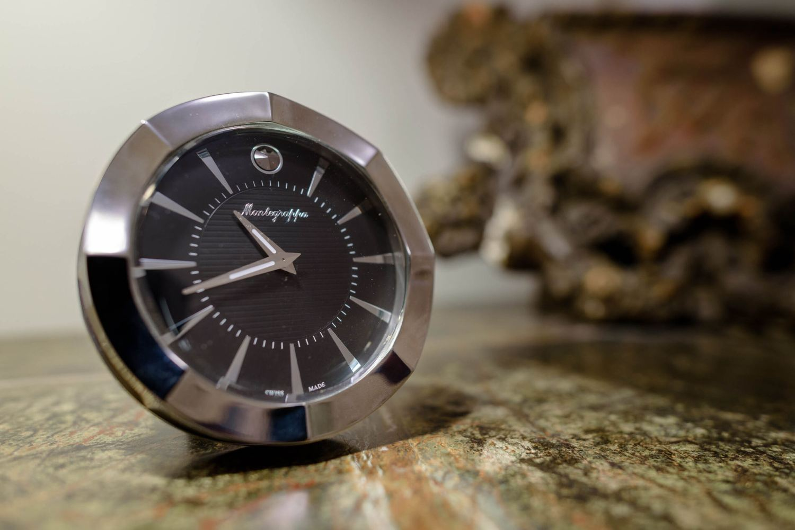
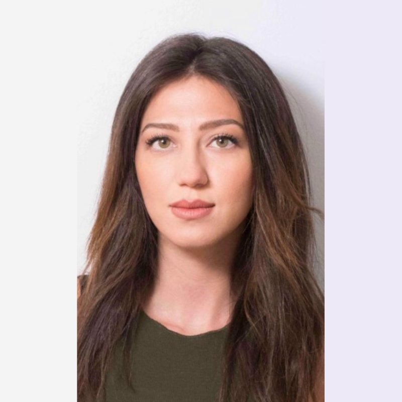

Αμαλία Μάστορα
ΨυχολόγοςΑτομικές συνεδρίες ψυχολογικής υποστήριξης και συνεργασία με τον ιατρό στην παρακολούθηση της πορείας.
Δρ. Γεώργιος Ι. Καραμπουτάκης · MD, MSc, PhD
Κλινική ψυχιατρική, γνωσιακή ψυχοθεραπεία, r-TMS και δικανική ψυχιατρική, σε δύο ιατρεία — στο κέντρο της Αθήνας και στη Γλυφάδα.

Ο Δρ. Γεώργιος Ι. Καραμπουτάκης είναι ψυχίατρος, Διδάκτωρ του Εθνικού και Καποδιστριακού Πανεπιστημίου Αθηνών και κάτοχος Μεταπτυχιακού Τίτλου του ΕΚΠΑ. Ειδικεύτηκε στην Α΄ Πανεπιστημιακή Ψυχιατρική Κλινική του Αιγινητείου Νοσοκομείου και σήμερα ασκεί ιδιωτικά την ψυχιατρική, ενώ παράλληλα είναι κλινικός ψυχίατρος στο Ερρίκος Ντυνάν Hospital Center.
Έχει μεγάλη εμπειρία στη διαχείριση και αντιμετώπιση καταστάσεων όπως οι κρίσεις πανικού, το άγχος, οι φοβίες, η κατάθλιψη, η ιδεοψυχαναγκαστική διαταραχή, η άνοια, οι διαταραχές ύπνου, οι ψυχώσεις, οι ψυχοσωματικές εκδηλώσεις, οι εξαρτήσεις και οι διαταραχές προσαρμογής σε νέες συνθήκες ζωής.
Η προσέγγισή του συνδυάζει τη βιολογική ψυχιατρική με τη γνωσιακή ψυχοθεραπεία: κάθε πλάνο σχεδιάζεται για τον συγκεκριμένο άνθρωπο, επανεξετάζεται τακτικά και εξηγείται με λόγια που καταλαβαίνει. Πέρα από το ιατρείο, δραστηριοποιείται στη δικανική ψυχιατρική ως πραγματογνώμονας των Πρωτοδικείων και Εισαγγελιών Αθηνών και Πειραιώς και ως διαπιστευμένος διαμεσολαβητής του Υπουργείου Δικαιοσύνης.
Δεν χρειάζεται να ξέρετε το όνομα αυτού που σας συμβαίνει για να ζητήσετε βοήθεια. Η πρώτη συνάντηση υπάρχει ακριβώς γι' αυτό — να ονομαστεί με ακρίβεια και να αποκτήσει πλάνο.
Από την πρώτη διαγνωστική εκτίμηση έως τη γνωμάτευση που ζητά ένας φορέας ή ένα δικαστήριο, όλα γίνονται στο ίδιο ιατρείο, από τον ίδιο ιατρό, με συνεχή παρακολούθηση.
Αναλυτική κλινική εκτίμηση με λήψη πλήρους ιστορικού, ψυχική εξέταση και, όπου χρειάζεται, εργαστηριακό ή απεικονιστικό έλεγχο για τον αποκλεισμό οργανικών αιτίων. Καταλήγει σε σαφή διάγνωση και σε θεραπευτικό πλάνο που συζητείται μαζί σας βήμα προς βήμα.
Δομημένη θεραπευτική παρέμβαση που εντοπίζει τα μοτίβα σκέψης και συμπεριφοράς που συντηρούν το σύμπτωμα και τα δουλεύει συστηματικά. Οι συνεδρίες είναι ατομικές, με συγκεκριμένους στόχους και τακτική επανεκτίμηση της προόδου.
Συνταγογράφηση και παρακολούθηση χρόνιας φαρμακευτικής αγωγής με βάση τη σύγχρονη ψυχοφαρμακολογία: επιλογή σχήματος, τιτλοποίηση δόσης, διαχείριση ανεπιθύμητων ενεργειών και σχεδιασμένη σταδιακή απόσυρση όταν έρθει η ώρα.
Εκτίμηση μνήμης, προσοχής και εκτελεστικών λειτουργιών με σταθμισμένα εργαλεία, για την έγκαιρη ανίχνευση νοητικής έκπτωσης και άνοιας. Η αξιολόγηση συνοδεύεται από γραπτό πόρισμα και οδηγίες παρακολούθησης για την οικογένεια.
Χορήγηση και ερμηνεία σταθμισμένων δοκιμασιών όπως WAIS-IV, MMPI-2 και TAT, για την αντικειμενική αποτύπωση νοητικών ικανοτήτων και χαρακτηριστικών προσωπικότητας. Τα αποτελέσματα συνδέονται πάντα με την κλινική εικόνα, ποτέ διαβασμένα μεμονωμένα.
Γνωματεύσεις για διορισμό ή έναρξη εργασιακής απασχόλησης, για άδεια κατοχής και οπλοφορίας κυνηγετικών και πυροβόλων όπλων, καθώς και για κάθε άλλη χρήση που απαιτεί τεκμηριωμένη ψυχιατρική εκτίμηση, με τήρηση όλων των νόμιμων προϋποθέσεων.
Πραγματογνωμοσύνες και υπηρεσίες Τεχνικού Συμβούλου σε ποινικές και αστικές ιατρονομικές υποθέσεις: ζητήματα καταλογισμού, δικαιοπρακτικής ικανότητας, επιμέλειας, ψυχικής βλάβης και αποζημίωσης, με εκθέσεις που αντέχουν στο ακροατήριο.
Ως διαπιστευμένος διαμεσολαβητής του Υπουργείου Δικαιοσύνης, ο Δρ. Καραμπουτάκης συντονίζει τη διαδικασία εξωδικαστικής επίλυσης διαφορών — οικογενειακών, αστικών ή εργασιακών — σε ουδέτερο, εμπιστευτικό πλαίσιο.
Κοινωνική μελέτη συνθηκών διαβίωσης, σύνταξη εκθέσεων, υποστήριξη του ασθενούς και της οικογένειας και συμβουλευτική σε θέματα διαχείρισης ιατροκοινωνικών προβλημάτων, σε συνεργασία με κοινωνική λειτουργό.

Μη επεμβατική, εγκεκριμένη από τον FDA μέθοδος που διεγείρει στοχευμένα περιοχές του εγκεφάλου με μαγνητικούς παλμούς. Εφαρμόζεται σε συνεδρίες, χωρίς αναισθησία και χωρίς νοσηλεία, και ο ασθενής επιστρέφει αμέσως στις δραστηριότητές του.
Η δικανική ψυχιατρική απαιτεί δύο πράγματα ταυτόχρονα: κλινική ακρίβεια και γλώσσα που στέκεται νομικά. Ο Δρ. Καραμπουτάκης εργάζεται στο πεδίο αυτό ως πραγματογνώμονας, τεχνικός σύμβουλος και διαπιστευμένος διαμεσολαβητής.
Εθνικό και Καποδιστριακό Πανεπιστήμιο Αθηνών.
Executive Education — «Leadership in Crises».
«Διαχείριση Κρίσεων, Μαζικών Καταστροφών & Επειγουσών Καταστάσεων» — κατεύθυνση Οργάνωσης και Διοίκησης.
Α΄ Πανεπιστημιακή Ψυχιατρική Κλινική ΕΚΠΑ, Αιγινήτειο Νοσοκομείο.
«Αξιολόγηση της Επικοινωνιακής Πολιτικής της Υγειονομικής Αρχής κατά τη διαχείριση της πανδημίας γρίπης Η1Ν1».
Πανεπιστημιακή Ψυχιατρική Κλινική ΕΚΠΑ, Γ.Ν. Κηφισιάς «Οι Άγιοι Ανάργυροι», και Κέντρο Κοινοτικής Ψυχικής Υγείας Ζωγράφου.
Άσκηση ιδιωτικής ψυχιατρικής σε Αθήνα και Γλυφάδα· κλινικός ψυχίατρος στο Ερρίκος Ντυνάν Hospital Center.
Όπου το περιστατικό το απαιτεί, η φροντίδα μοιράζεται σε μια μικρή, σταθερή ομάδα — ώστε το ψυχολογικό και το κοινωνικό σκέλος να μη μένουν πίσω από το ιατρικό.

Ατομικές συνεδρίες ψυχολογικής υποστήριξης και συνεργασία με τον ιατρό στην παρακολούθηση της πορείας.

Λήψη κοινωνικού ιστορικού, μελέτη συνθηκών διαβίωσης, εκθέσεις και υποστήριξη της οικογένειας.
Στο κέντρο της Αθήνας, ένα βήμα από το μετρό της Πλατείας Μαβίλη, και στη Γλυφάδα για τα νότια προάστια. Όλες οι επισκέψεις γίνονται κατόπιν ραντεβού.
Τηλεοπτικές και ραδιοφωνικές συμμετοχές, αρθρογραφία και συνεντεύξεις σε έντυπα και ηλεκτρονικά μέσα, με θέματα από την εφηβεία και τον σχολικό εκφοβισμό έως τον ύπνο και τη διαχείριση κρίσεων.
Βία και παραβατική συμπεριφορά στην εφηβεία
Ύπνος και όνειρα
Σχολικός εκφοβισμός
Συνέντευξη για την ψυχική υγεία στην κρίση
Ψυχολογία και διαχείριση κρίσεων
Από τον κορωνοϊό στον παρανοϊό
Γράψτε δυο λόγια για αυτό που σας απασχολεί και σε ποιο ιατρείο σας βολεύει να έρθετε. Θα λάβετε απάντηση με διαθέσιμες ώρες.